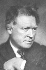

Also known as:Das Cabinet des Dr. Caligari (original title)
Country:Germany, 76 minutes
Spoken languages:
Genres:Drama, Horror, Thriller, Crime
Director(s):Robert Wiene
Writer(s):Hans Janowitz, Carl Mayer
Video Codec:Unknown
Number: 3029


Certification:NR
Storyline:
Francis, a young man, recalls in his memory the horrible experiences he and his fiancée Jane recently went through. Francis and his friend Alan visit The Cabinet of Dr. Caligari, an exhibit where the mysterious doctor shows the somnambulist Cesare, and awakens him for some moments from his death-like sleep.
Cast: 
Medium: Original DVD,
Loaned: No
Aspect ratio: Unknown